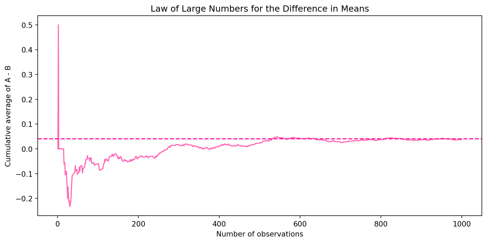
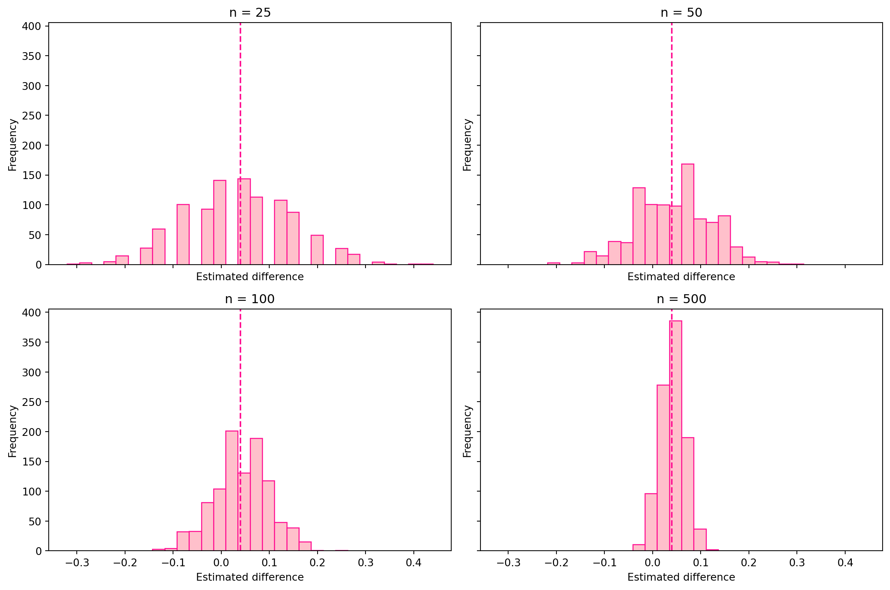

| Group | Estimate | |
|---|---|---|
| 0 | CTA A | 0.216 |
| 1 | CTA B | 0.178 |
| 2 | Difference (A - B) | 0.038 |
A/B Testing a Call to Action
Simulating Key Ideas from Classical Frequentist Statistics
Introduction
Suppose I run a website with a landing page that invites visitors to sign up for a newsletter. I want to know which version of the call to action leads to more sign-ups. CTA A says “Sign up for our newsletter here!” and CTA B says “Stay up to date by signing up!”. Because even small wording changes can affect behavior, this is a natural setting for an A/B test.
In an A/B test, visitors are randomly assigned to one of two versions of the same page. One group sees CTA A and the other sees CTA B. I then compare the sign-up rates across the two groups. Since the assignment is random, any systematic difference in sign-up behavior can be attributed to the wording of the CTA rather than to pre-existing differences between visitors.
The A/B Test as a Statistical Problem
Each visitor either signs up or does not, so I model each outcome as a Bernoulli random variable. Let \(\pi\) denote the probability that a visitor signs up. Because the CTA may influence behavior, I allow this probability to differ across groups: visitors who see CTA A have sign-up probability \(\pi_A\), while visitors who see CTA B have sign-up probability \(\pi_B\).
The parameter I care about is the treatment effect,
\[ \theta = \pi_A - \pi_B \]
which is the difference in true sign-up rates between the two CTAs. A positive value means CTA A performs better, while a negative value means CTA B performs better.
I estimate this quantity with the difference in sample means,
\[ \hat\theta = \bar{X}_A - \bar{X}_B \]
Since each observation is either 0 or 1, the sample mean is just the sample proportion of sign-ups. That means \(\bar{X}_A = \hat\pi_A\) and \(\bar{X}_B = \hat\pi_B\), so the estimator is simply the observed difference in sign-up rates.
Simulating Data
In a real experiment I would not know the true values of \(\pi_A\) and \(\pi_B\). For this exercise, however, I set them myself so I can study how the estimator behaves when the truth is known. I assume \(\pi_A = 0.22\) and \(\pi_B = 0.18\), so the true difference is \(\theta = 0.04\).
The code below simulates 1,000 visitors in each group.
In this simulation, the observed sign-up rate is 0.216 for CTA A and 0.178 for CTA B, producing an estimated difference of 0.038. That estimate is close to the true difference of 0.04, which is exactly what I would hope to see in a reasonably large sample.
The Law of Large Numbers
The Law of Large Numbers says that as the sample size grows, the sample mean converges to the population mean. In this setting, that matters because my estimator \(\hat\theta = \bar{X}_A - \bar{X}_B\) is built from sample means. As I observe more visitors, I should expect the estimated difference in sign-up rates to stabilize around the true difference of 0.04.
To show this, I compute the element-wise differences between the simulated A and B outcomes and then calculate the cumulative average of those differences.

At the start of the plot, the cumulative average moves around quite a bit because each new observation has a large effect. As the sample grows, the estimate settles down and moves toward the true value of 0.04. The main takeaway is that larger samples reduce noise and make the observed difference in sign-up rates more reliable.
Bootstrap Standard Errors
A point estimate by itself is not enough. I also want to know how precise that estimate is. The bootstrap is a resampling method that estimates the variability of a statistic without relying entirely on a closed-form formula. The basic idea is to resample with replacement from the observed data many times, recompute the statistic on each resample, and use the standard deviation of those resampled statistics as the estimated standard error.
| Quantity | Value | |
|---|---|---|
| 0 | Bootstrap SE | 0.0177 |
| 1 | Analytical SE | 0.0178 |
| 2 | 95% CI Lower | 0.0034 |
| 3 | 95% CI Upper | 0.0726 |
The bootstrap standard error is 0.0177, while the analytical standard error is 0.0178. Those two values are almost identical, which is reassuring. It suggests that both the resampling approach and the Bernoulli standard-error formula are capturing the same underlying variability.
Using the bootstrap standard error, the approximate 95% confidence interval for \(\theta\) is [0.0034, 0.0726]. Because the interval is entirely above zero, the simulated data suggest that CTA A performs better than CTA B.
The Central Limit Theorem
The Central Limit Theorem says that even when the underlying data are not Normally distributed, the sampling distribution of the sample mean becomes approximately Normal as the sample size grows. Since my estimator is the difference of two sample means, the same idea applies here. This is what makes large-sample inference possible even though the raw data are only 0s and 1s.
To illustrate this, I simulate the sampling distribution of \(\hat\theta\) for four different sample sizes: \(n \in \{25, 50, 100, 500\}\).

At the smaller sample sizes, the histograms are rougher and less symmetric. As the sample size increases, the distribution becomes smoother and more bell-shaped. That is the CLT in action: the estimator becomes approximately Normal even though the underlying outcomes are Bernoulli.
Hypothesis Testing
A hypothesis test asks whether the observed data are sufficiently inconsistent with a null hypothesis that I am willing to reject it. In this case the natural null hypothesis is
\[ H_0: \theta = 0 \]
which says the two CTAs have the same true sign-up rate. The alternative is
\[ H_1: \theta \neq 0 \]
which says the sign-up rates differ.
Because the CLT tells me that \(\hat\theta\) is approximately Normally distributed for large samples, I can standardize it to form a test statistic:
\[ z = \frac{\hat\theta - 0}{SE(\hat\theta)} \]
Under the null, this statistic is approximately standard Normal. That gives me a reference distribution for computing a p-value.
This is often casually called a “t-test,” but that label is not exact here. The classical t-test comes from Normally distributed data with an estimated variance, which produces a true t-distribution. My data are Bernoulli rather than Normal, so there is no exact t result. What I am really doing is a large-sample z-test justified by the CLT. In practice, with a sample this large, the distinction is minor.
| Quantity | Value | |
|---|---|---|
| 0 | z statistic | 2.1388 |
| 1 | p-value | 0.0325 |
The test statistic is 2.1388 and the two-sided p-value is 0.0325. Since the p-value is below 0.05, I reject the null hypothesis of equal sign-up rates. In this simulated example, the data provide evidence that the two CTAs do not perform the same, and the positive estimate indicates that CTA A is better.
The T-Test as a Regression
The same two-sample comparison can be written as a regression problem. I stack the two groups into one dataset and define an indicator variable \(D_i\) that equals 1 if the visitor saw CTA A and 0 if the visitor saw CTA B. I then fit the model
\[ Y_i = \beta_0 + \beta_1 D_i + \varepsilon_i \]
where \(Y_i\) is 1 if the visitor signed up and 0 otherwise.
This regression has a straightforward interpretation. When \(D_i = 0\), the expected value of \(Y_i\) is \(\beta_0\), so \(\beta_0\) is the mean of Group B and estimates \(\pi_B\). When \(D_i = 1\), the expected value is \(\beta_0 + \beta_1\), so that quantity estimates \(\pi_A\). Therefore \(\beta_1 = \pi_A - \pi_B = \theta\), and the coefficient on the treatment indicator is exactly the difference in means.
| Quantity | Value | |
|---|---|---|
| 0 | Intercept (beta_0) | 0.1780 |
| 1 | Treatment effect (beta_1) | 0.0380 |
| 2 | SE(beta_1) | 0.0178 |
| 3 | t statistic | 2.1377 |
| 4 | p-value | 0.0325 |
The regression coefficient on the treatment indicator is 0.0380, exactly the same as the difference in means computed earlier. The regression standard error is 0.0178, the t-statistic is 2.1377, and the p-value is 0.0327. These results line up almost perfectly with the earlier hypothesis test.
This equivalence matters because regression provides a much more flexible framework. In the simple two-group case it reproduces the same answer, but it also makes it easy to add controls, interaction terms, or multiple treatment arms without changing the general logic of the analysis.
The Problem with Peeking
Suppose my boss is impatient and wants to check the results after every 100 visitors per group rather than waiting until the full sample of 1,000 visitors per group has arrived. That means testing at \(n = 100, 200, \ldots, 1000\) and stopping early if any p-value is below 0.05.
This is a problem under classical frequentist inference. A single test at the 5% level has a 5% false positive rate only when the testing plan is fixed in advance. Repeatedly checking the data creates multiple chances to reject the null just by luck. Even if the null is true, the probability that at least one of those repeated peeks looks significant can be much larger than 5%.
To demonstrate this, I simulate a world where the null is actually true: \(\pi_A = \pi_B = 0.20\).
| Quantity | Value | |
|---|---|---|
| 0 | Nominal false positive rate | 0.050 |
| 1 | Empirical false positive rate with peeking | 0.199 |
The empirical false positive rate is 0.199, which is far above the nominal 0.05 level of a single fixed-horizon test. In other words, repeated peeking nearly quadruples the false positive rate in this simulation. The practical implication is simple: if a team repeatedly checks p-values during an A/B test and stops the first time it sees significance, it will declare too many fake winners.
Conclusion
This exercise used a simple A/B testing example to illustrate several foundational ideas from frequentist statistics. The Law of Large Numbers explained why the estimator becomes more stable as the sample grows. The bootstrap provided a practical way to quantify uncertainty. The Central Limit Theorem justified approximate Normal inference for the difference in sign-up rates, which then supported confidence intervals and hypothesis testing. I also showed that the same two-sample comparison can be written as a regression, linking experimental design to a broader modeling framework.
The final section highlighted an important operational lesson. Correct formulas are not enough by themselves; valid inference also depends on disciplined experimental design. In A/B testing, that means not only randomizing treatment assignment, but also committing to a sensible stopping rule instead of repeatedly peeking at the data until something looks significant.